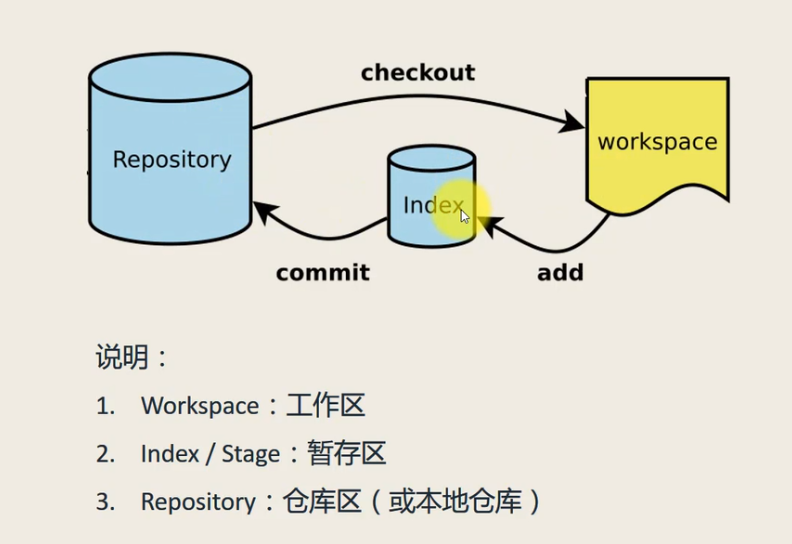

初始化本地仓库
方式一：git init
方式二（克隆一个远程仓库到本地仓库）：git clone 远程仓库地址
提交工作区修改到暂存区
方式一：git add 文件名
方式二（推荐使用，一次提交所有工作区的修改到暂存区）：git add .
提交暂存区修改到本地仓库
方式一：git commit -m 信息
方式二（推荐使用，一次提交所有工作区的修改到本地仓库，不过新创建的文件还是要先git add）：git commit -am 信息
查看状态
git status
查看提交历史
git log